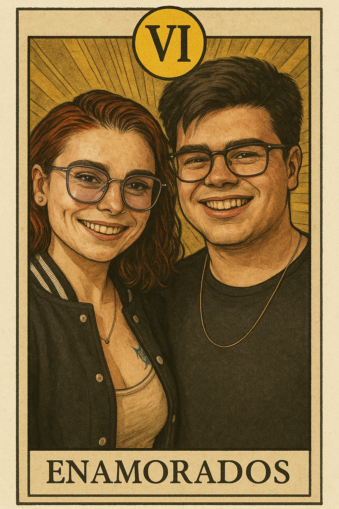

Oi, meu amor, tudo bem? Se você está lendo isso antes do dia 12, é porque você foi bem no quiz (tava bem fácil né?...), então meus parabéns meu amor (pessoa ansiosa ai ai)!
Queria, antes de tudo, te desejar um feliz dia dos namorados, sei que no mais é só uma data, mas quero que todas as nossas datas tenham um pouco de importância, afinal, todo dia com você é um dia especial pra mim.
Você, de todas as pessoas que eu já conheci na vida (sem exceção alguma), é a pessoa mais incrível, única e admirável de todas. Mesmo se houvesse uma sala com todas as pessoas que eu já conheci na vida, você seria a única que me cativaria, que me faria querer estar perto, que me faria querer te conhecer mais e mais, até porque, foi assim desde a primeira vez que eu te vi (literalmente), e isso nao tem a ver com sua beleza (que é inegável), mas algo em você me atrai, me cativa, me prende, tua voz me chama, me acalma, teu olhar me encanta, teu sorriso me ilumina, e eu não consigo explicar o porquê, mas é assim que eu me sinto e tenho quase certeza que é perceptível pra qualquer pessoa que me veja quando estou com você.
Eu não sei o que eu fiz pra merecer você, mas eu sou grato por cada dia que passo com você, por cada momento que vivemos juntos, por cada risada, cada conversa, cada silêncio confortável.
Eu fui agraciado com sua presença na minha vida, você não é um problema, você nunca vai ser um problema, você é solução meu bem, você é resposta, você é paz, você é amor, você é repleta de coisas boas, tudo em você é bom, eu não consigo expressar isso em palavras, queria que fosse possível, mas sinceramente faltam palavras nesse mundo para te descrever, faltam palavras nesse mundo para descrever o quão sortudo eu sou, você transpira amor, você é luz e eu amo você exatamente do jeito que você é, daqui a pouquinho é meu aniversário (ou foi ontem, depende de quando você está lendo isso), e você foi e é o melhor presente que eu poderia ter recebido esse ano (e em toda a minha vida). Eu sempre vou estar aqui pra você independente do que seja, independente do que aconteça, você NUNCA vai atrapalhar a minha vida, você só ajuda, você reluz tudo que e bom nesse mundo.
Obrigado por tudo que você fez, tem feito e faz por mim meu amor, saiba que você sempre terá um abrigo em mim, você sempre terá pra onde voltar e o mais importante de tudo, é que você sempre vai ter alguém esperando por você, e você é linda, assim, do jeito que você é, não se olhe como uma pessoa "quebrada", não se olhe como um problema, não se veja como algo ruim, pois você não é e você não merece carregar o peso de se sentir assim, você não trás coisas ruins, desde o dia que a gente tomou um café até o exato momento que eu to escrevendo isso, você só me trouxe alegria, paz, amor, tudo que há de bom nesse plano. Eu queria que você se enxergasse com os meus olhos pra ver a mulher ÍNCRIVEL que você é. Você é maravilhosamente incrível, você é um exemplo, eu espero ser como você um dia, eu espero ser metade do que você é, você me inspira, eu te admiro demais e eu te amo demais.
Com amor, do seu marido do futuro.
❤️

Eu não sou nenhum artista como você, sei que essa arte ta longe de ser perfeita, mas "fiz" ela inspirado nas cartas que tem no seu estúdio (tenho foto de todas...), espero que você goste desse pequeno gesto.
Voltar para o início